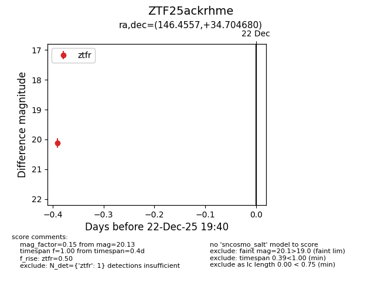
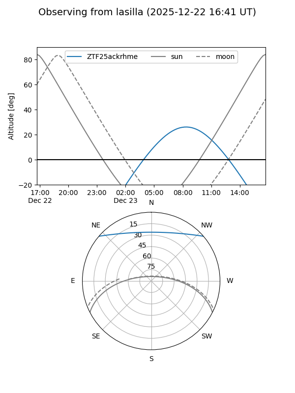
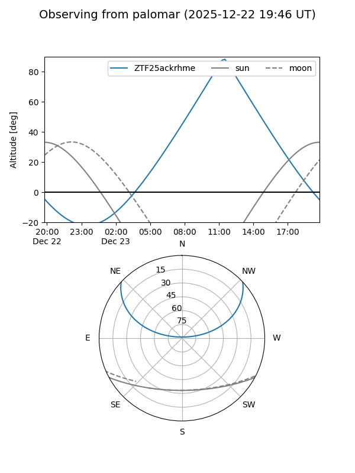

ZTF25ackrhme
Target ZTF25ackrhme at 2025-12-29 11:23
Aliases and brokers:
FINK: fink-portal.org/ZTF25ackrhme
Lasair: lasair-ztf.lsst.ac.uk/objects/ZTF25ackrhme
ALeRCE: alerce.online/object/ZTF25ackrhme
alt names
ZTF25ackrhme (ztf,fink_ztf)
Coordinates:
equatorial (ra, dec) = 146.4557,+34.70468
equatorial (HMS+DMS) = 09:45:49.37,+34:42:16.85
galactic (l, b) = (190.3004,+49.83082)
Flags:
Photometry:
last ztfr=19.79
2 ztfr detections
Lightcurve

Visibility


Additional plots